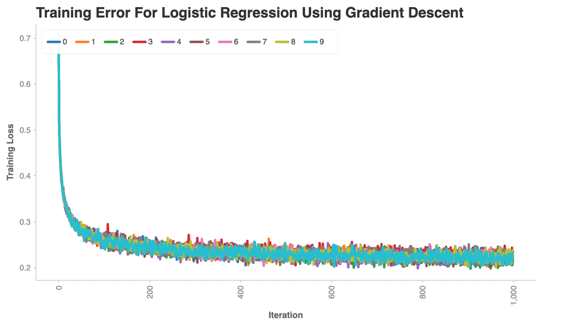
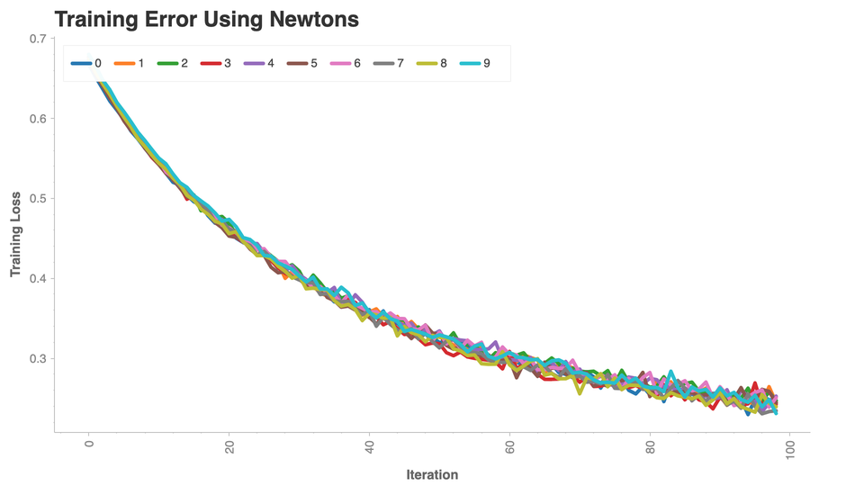

Logistic Regression Classifier From Scratch¶
import pandas as pd
import numpy as np
from sklearn.model_selection import KFold
import math
import pdb
Load Data¶
base_path = "/Users/trevorgordon/Library/Mobile Documents/com~apple~CloudDocs/Documents/root/Columbia/Fall2021/ELEN4720/Assignments/assignment2/"
X_all = pd.read_csv(base_path + "hw2-data/Bayes_classifier/X.csv", header=None)
one_col = np.ones((len(X_all), 1))
X_all = np.concatenate([X_all, one_col], axis=1)
y_all = pd.read_csv(base_path + "hw2-data/Bayes_classifier/y.csv", header=None)
y_all = y_all.to_numpy()
y_train = y_all
X_train = X_all
What the Logistic Regression Classifier does¶
Training¶
Predicting¶
def sigmoid(x):
"""Sigmoid function implementation"""
return float(1) / (1 + np.exp(-1*x))
def logistic_regression_loss_vectorized(W, X, y, reg):
"""
Logistic regression loss function, vectorized version.
Use this linear classification method to find optimal decision boundary.
Inputs and outputs are the same as softmax_loss_naive.
"""
loss = 0
# Initialize the gradient to zero
dW = np.zeros_like(W)
n = len(y)
f = X @ W
y = y.reshape(1, n)
sig_f = sigmoid(f)
loss_a = (y @ np.log(sig_f))/n
loss_b = ((1-y) @ np.log(1-sig_f))/n
loss_c = reg*(W**2).mean()
loss = loss_a + loss_b + loss_c
y = y.reshape((n, 1))
dW = X.T @ (y-sig_f)
dW = dW.reshape(W.shape)
dW -= (2*reg*(W))
return -1*loss[0], dW
def newtons_method_loss(W, W_old, X, y, reg):
dW = np.zeros_like(W)
n = len(y)
y = y.reshape((n, 1))
y_t = y.reshape(1, n)
f = X @ W
sig_f = sigmoid(f)
loss_a = (y_t @ np.log(sig_f))/n
loss_b = ((1-y_t) @ np.log(1-sig_f))/n
loss_c = reg*(W**2).mean()
loss = -1*(loss_a + loss_b + loss_c)
dW = X.T @ (y-sig_f)
dW = dW.reshape(W.shape)
D = (sig_f * (1 - sig_f))
D = D.reshape(len(D))
D = np.diag(D)
H = X.T @ D @ X
weight_change = (W - W_old)
grad_term = weight_change.T @ dW
sec_grad_term = 0.5*weight_change.T @ H @ weight_change
loss_prime = loss + grad_term + sec_grad_term
try:
dW_update = np.linalg.inv(H) @ dW
return loss_prime, dW_update.reshape(W.shape)
except:
print("couldn't calculate hessian")
return loss, dW
class BasicClassifier():
"""Basic classifier
- Training is done batched gradient descent
- f = X * W
-
"""
def __init__(self) -> None:
self.weights = None
def initialize_weights(self, dim):
self.weights = 0.001 * np.random.randn(dim, 1)
self.old_weights = 0.001 * np.random.randn(dim, 1)
def train(self, X_train, y_train, batch_size=100, learning_rate=0.00002, training_iterations=1000, reg=1e-5):
"""This function will implement batched gradient descent
"""
num_train = len(X_train)
num_predictors = len(X_train[0])
if self.weights is None:
self.initialize_weights(num_predictors)
all_loss = []
for i in range(training_iterations):
if batch_size:
random_iis = np.random.choice(range(num_train), size=batch_size)
X_batch = X_train[random_iis]
y_batch = y_train[random_iis]
else:
X_batch = X_train
y_batch = y_train
loss, dW = self.loss(X_batch, y_batch, regularization=reg)
all_loss.append(loss)
self.old_weights = self.weights
self.weights += learning_rate * dW
if i % 100 == 0:
print('iteration %d / %d: loss %f' % (i, training_iterations, loss))
return all_loss
def loss(self):
raise NotImplementedError("Inherit this class and overwrite this function.")
def fit(self, X_train, y_train):
"""Fit the input data
After this function the model parameters will be fit. We need to have:
-
Args:
X_train (np.array): Training features
y_train (np.array): Single column for the binary predicted class either 0 or 1
"""
return self.train(X_train, y_train)
def predict(self, X):
"""Predict new data
To predict we need to:
- Calculate the probability of being either class
- Choose the class with the higher probability
"""
probs = X @ self.weights
return probs > 0
class LogisticRegression(BasicClassifier):
"""LogisticRegression
This is an implementation from scratch that has the following:
- Input data x is assumed to follow a poisson distribution with prior gamma(2,1)
- Y follows a bernoulli
"""
def __init__(self, *args, **kwargs) -> None:
self.method = kwargs.pop("method", "grad_desc")
return super().__init__(*args, **kwargs)
def loss(self, X_train, y_train, regularization):
if self.method == "grad_desc":
return logistic_regression_loss_vectorized(self.weights, X_train, y_train, regularization)
elif self.method == "newton":
return newtons_method_loss(self.weights, self.old_weights, X_train, y_train, regularization)
y_test_1_y_pred_1 = []
y_test_0_y_pred_0 = []
y_test_1_y_pred_0 = []
y_test_0_y_pred_1 = []
all_losses = []
kf = KFold(n_splits=10, shuffle=True)
for train_index, test_index in kf.split(X_all):
print("------------------------------------ NEW TEST ------------------------------------")
X_train, X_test = X_all[train_index], X_all[test_index]
y_train, y_test = y_all[train_index], y_all[test_index]
cl = LogisticRegression()
loss_data = cl.train(X_train, y_train, learning_rate=0.01/4600, batch_size=4600, training_iterations=1000)
y_pred = cl.predict(X_test)
all_losses.append(loss_data)
joined = pd.concat([pd.DataFrame(y_pred, columns=["y_pred"]), pd.DataFrame(y_test, columns=["y_test"])], axis=1)
joined["correct"] = joined["y_pred"] == joined["y_test"]
y_test_1_y_pred_1.append(joined.loc[(joined["correct"] == True) & (joined["y_test"] == 1),"correct"].count()) # /len(y_test)
y_test_0_y_pred_0.append(joined.loc[(joined["correct"] == True) & (joined["y_test"] == 0),"correct"].count()) # /len(y_test)
y_test_1_y_pred_0.append(joined.loc[(joined["correct"] == False) & (joined["y_test"] == 1),"correct"].count()) # /len(y_test)
y_test_0_y_pred_1.append(joined.loc[(joined["correct"] == False) & (joined["y_test"] == 0),"correct"].count()) # /len(y_test)
y_test_0_y_pred_0_avg = sum(y_test_0_y_pred_0)#/len(y_test_0_y_pred_0)
y_test_0_y_pred_1_avg = sum(y_test_0_y_pred_1)#/len(y_test_0_y_pred_1)
y_test_1_y_pred_0_avg = sum(y_test_1_y_pred_0)#/len(y_test_1_y_pred_0)
y_test_1_y_pred_1_avg = sum(y_test_1_y_pred_1)#/len(y_test_1_y_pred_1)
[[y_test_0_y_pred_0_avg, y_test_0_y_pred_1_avg], [y_test_1_y_pred_0_avg, y_test_1_y_pred_1_avg]]
------------------------------------ NEW TEST ------------------------------------
iteration 0 / 1000: loss 0.693338
iteration 100 / 1000: loss 0.251873
iteration 200 / 1000: loss 0.252365
iteration 300 / 1000: loss 0.238385
iteration 400 / 1000: loss 0.231796
iteration 500 / 1000: loss 0.229947
iteration 600 / 1000: loss 0.236804
iteration 700 / 1000: loss 0.226493
iteration 800 / 1000: loss 0.218084
iteration 900 / 1000: loss 0.238149
------------------------------------ NEW TEST ------------------------------------
iteration 0 / 1000: loss 0.689797
iteration 100 / 1000: loss 0.268992
iteration 200 / 1000: loss 0.239548
iteration 300 / 1000: loss 0.221198
iteration 400 / 1000: loss 0.234766
iteration 500 / 1000: loss 0.242028
iteration 600 / 1000: loss 0.234222
iteration 700 / 1000: loss 0.211606
iteration 800 / 1000: loss 0.230107
iteration 900 / 1000: loss 0.224818
------------------------------------ NEW TEST ------------------------------------
iteration 0 / 1000: loss 0.694960
iteration 100 / 1000: loss 0.259222
iteration 200 / 1000: loss 0.235367
iteration 300 / 1000: loss 0.242880
iteration 400 / 1000: loss 0.219167
iteration 500 / 1000: loss 0.230105
iteration 600 / 1000: loss 0.207111
iteration 700 / 1000: loss 0.215106
iteration 800 / 1000: loss 0.216111
iteration 900 / 1000: loss 0.212244
------------------------------------ NEW TEST ------------------------------------
iteration 0 / 1000: loss 0.699765
iteration 100 / 1000: loss 0.260444
iteration 200 / 1000: loss 0.234967
iteration 300 / 1000: loss 0.244606
iteration 400 / 1000: loss 0.237865
iteration 500 / 1000: loss 0.231662
iteration 600 / 1000: loss 0.222048
iteration 700 / 1000: loss 0.233446
iteration 800 / 1000: loss 0.229500
iteration 900 / 1000: loss 0.222170
------------------------------------ NEW TEST ------------------------------------
iteration 0 / 1000: loss 0.705172
iteration 100 / 1000: loss 0.275688
iteration 200 / 1000: loss 0.244210
iteration 300 / 1000: loss 0.225495
iteration 400 / 1000: loss 0.235525
iteration 500 / 1000: loss 0.216396
iteration 600 / 1000: loss 0.222978
iteration 700 / 1000: loss 0.220578
iteration 800 / 1000: loss 0.226043
iteration 900 / 1000: loss 0.230722
------------------------------------ NEW TEST ------------------------------------
iteration 0 / 1000: loss 0.683745
iteration 100 / 1000: loss 0.260351
iteration 200 / 1000: loss 0.242471
iteration 300 / 1000: loss 0.229436
iteration 400 / 1000: loss 0.235933
iteration 500 / 1000: loss 0.224015
iteration 600 / 1000: loss 0.231310
iteration 700 / 1000: loss 0.216398
iteration 800 / 1000: loss 0.221467
iteration 900 / 1000: loss 0.231145
------------------------------------ NEW TEST ------------------------------------
iteration 0 / 1000: loss 0.695688
iteration 100 / 1000: loss 0.262743
iteration 200 / 1000: loss 0.249293
iteration 300 / 1000: loss 0.228835
iteration 400 / 1000: loss 0.223385
iteration 500 / 1000: loss 0.233774
iteration 600 / 1000: loss 0.221300
iteration 700 / 1000: loss 0.218937
iteration 800 / 1000: loss 0.228179
iteration 900 / 1000: loss 0.229817
------------------------------------ NEW TEST ------------------------------------
iteration 0 / 1000: loss 0.696781
iteration 100 / 1000: loss 0.244868
iteration 200 / 1000: loss 0.232828
iteration 300 / 1000: loss 0.235825
iteration 400 / 1000: loss 0.234470
iteration 500 / 1000: loss 0.226503
iteration 600 / 1000: loss 0.216168
iteration 700 / 1000: loss 0.224080
iteration 800 / 1000: loss 0.226948
iteration 900 / 1000: loss 0.227838
------------------------------------ NEW TEST ------------------------------------
iteration 0 / 1000: loss 0.695735
iteration 100 / 1000: loss 0.254271
iteration 200 / 1000: loss 0.245869
iteration 300 / 1000: loss 0.241588
iteration 400 / 1000: loss 0.241768
iteration 500 / 1000: loss 0.242216
iteration 600 / 1000: loss 0.220520
iteration 700 / 1000: loss 0.215727
iteration 800 / 1000: loss 0.215945
iteration 900 / 1000: loss 0.202599
------------------------------------ NEW TEST ------------------------------------
iteration 0 / 1000: loss 0.701012
iteration 100 / 1000: loss 0.259311
iteration 200 / 1000: loss 0.257707
iteration 300 / 1000: loss 0.233409
iteration 400 / 1000: loss 0.225577
iteration 500 / 1000: loss 0.222956
iteration 600 / 1000: loss 0.232151
iteration 700 / 1000: loss 0.234612
iteration 800 / 1000: loss 0.225102
iteration 900 / 1000: loss 0.217476
[[2619, 168], [168, 1645]]
all_losses_df = np.array(all_losses)
all_losses_df = all_losses_df.reshape(len(all_losses_df), len(all_losses_df[0]))
all_losses_df = pd.DataFrame(all_losses_df).T
all_losses_df["iter"] = all_losses_df.index
all_losses_df = all_losses_df.melt(id_vars=["iter"])
import chartify
ch = chartify.Chart(blank_labels=True)
ch.set_title("Training Error For Logistic Regression Using Gradient Descent")
ch.plot.line(
data_frame=all_losses_df,
color_column="variable",
x_column='iter',
y_column="value")
ch.axes.set_yaxis_label("Training Loss")
ch.axes.set_xaxis_label("Iteration")
ch.axes.set_xaxis_tick_orientation("vertical")
ch.show('png')

y_test_1_y_pred_1 = []
y_test_0_y_pred_0 = []
y_test_1_y_pred_0 = []
y_test_0_y_pred_1 = []
all_losses = []
kf = KFold(n_splits=10, shuffle=True)
for train_index, test_index in kf.split(X_all):
print("------------------------------------ NEW TEST ------------------------------------")
X_train, X_test = X_all[train_index], X_all[test_index]
y_train, y_test = y_all[train_index], y_all[test_index]
cl = LogisticRegression(method="newton")
loss_data = cl.train(X_train, y_train, learning_rate=0.03, batch_size=4600, training_iterations=100)
loss_data = loss_data[1:] # First loss point is incorrect as old weights are initialized as random.
y_pred = cl.predict(X_test)
all_losses.append(loss_data)
joined = pd.concat([pd.DataFrame(y_pred, columns=["y_pred"]), pd.DataFrame(y_test, columns=["y_test"])], axis=1)
joined["correct"] = joined["y_pred"] == joined["y_test"]
y_test_1_y_pred_1.append(joined.loc[(joined["correct"] == True) & (joined["y_test"] == 1),"correct"].count()) # /len(y_test)
y_test_0_y_pred_0.append(joined.loc[(joined["correct"] == True) & (joined["y_test"] == 0),"correct"].count()) # /len(y_test)
y_test_1_y_pred_0.append(joined.loc[(joined["correct"] == False) & (joined["y_test"] == 1),"correct"].count()) # /len(y_test)
y_test_0_y_pred_1.append(joined.loc[(joined["correct"] == False) & (joined["y_test"] == 0),"correct"].count()) # /len(y_test)
y_test_0_y_pred_0_avg = sum(y_test_0_y_pred_0)#/len(y_test_0_y_pred_0)
y_test_0_y_pred_1_avg = sum(y_test_0_y_pred_1)#/len(y_test_0_y_pred_1)
y_test_1_y_pred_0_avg = sum(y_test_1_y_pred_0)#/len(y_test_1_y_pred_0)
y_test_1_y_pred_1_avg = sum(y_test_1_y_pred_1)#/len(y_test_1_y_pred_1)
[[y_test_0_y_pred_0_avg, y_test_0_y_pred_1_avg], [y_test_1_y_pred_0_avg, y_test_1_y_pred_1_avg]]
all_losses_df = np.array(all_losses)
all_losses_df = all_losses_df.reshape(len(all_losses_df), len(all_losses_df[0]))
all_losses_df = pd.DataFrame(all_losses_df).T
all_losses_df["iter"] = all_losses_df.index
all_losses_df = all_losses_df.melt(id_vars=["iter"])
------------------------------------ NEW TEST ------------------------------------
iteration 0 / 100: loss 5.386685
iteration 10 / 100: loss 0.551464
iteration 20 / 100: loss 0.469033
iteration 30 / 100: loss 0.404728
iteration 40 / 100: loss 0.360218
iteration 50 / 100: loss 0.325921
iteration 60 / 100: loss 0.304358
iteration 70 / 100: loss 0.275884
iteration 80 / 100: loss 0.264748
iteration 90 / 100: loss 0.255908
------------------------------------ NEW TEST ------------------------------------
iteration 0 / 100: loss 42.310915
iteration 10 / 100: loss 0.555417
iteration 20 / 100: loss 0.467349
iteration 30 / 100: loss 0.408300
iteration 40 / 100: loss 0.353922
iteration 50 / 100: loss 0.321344
iteration 60 / 100: loss 0.305691
iteration 70 / 100: loss 0.288014
iteration 80 / 100: loss 0.267775
iteration 90 / 100: loss 0.248305
------------------------------------ NEW TEST ------------------------------------
iteration 0 / 100: loss -25.031761
iteration 10 / 100: loss 0.557433
iteration 20 / 100: loss 0.477213
iteration 30 / 100: loss 0.416873
iteration 40 / 100: loss 0.361537
iteration 50 / 100: loss 0.321883
iteration 60 / 100: loss 0.304800
iteration 70 / 100: loss 0.287660
iteration 80 / 100: loss 0.269336
iteration 90 / 100: loss 0.248903
------------------------------------ NEW TEST ------------------------------------
iteration 0 / 100: loss 30.528837
iteration 10 / 100: loss 0.551031
iteration 20 / 100: loss 0.463414
iteration 30 / 100: loss 0.401767
iteration 40 / 100: loss 0.359394
iteration 50 / 100: loss 0.319109
iteration 60 / 100: loss 0.286834
iteration 70 / 100: loss 0.278384
iteration 80 / 100: loss 0.261990
iteration 90 / 100: loss 0.236833
------------------------------------ NEW TEST ------------------------------------
iteration 0 / 100: loss 13.445705
iteration 10 / 100: loss 0.556595
iteration 20 / 100: loss 0.473645
iteration 30 / 100: loss 0.415790
iteration 40 / 100: loss 0.370013
iteration 50 / 100: loss 0.329283
iteration 60 / 100: loss 0.298607
iteration 70 / 100: loss 0.282531
iteration 80 / 100: loss 0.267891
iteration 90 / 100: loss 0.248635
------------------------------------ NEW TEST ------------------------------------
iteration 0 / 100: loss 21.726099
iteration 10 / 100: loss 0.552229
iteration 20 / 100: loss 0.463161
iteration 30 / 100: loss 0.401680
iteration 40 / 100: loss 0.359074
iteration 50 / 100: loss 0.331660
iteration 60 / 100: loss 0.297245
iteration 70 / 100: loss 0.276254
iteration 80 / 100: loss 0.282319
iteration 90 / 100: loss 0.251745
------------------------------------ NEW TEST ------------------------------------
iteration 0 / 100: loss -11.426540
iteration 10 / 100: loss 0.560810
iteration 20 / 100: loss 0.466372
iteration 30 / 100: loss 0.409518
iteration 40 / 100: loss 0.362517
iteration 50 / 100: loss 0.321551
iteration 60 / 100: loss 0.314079
iteration 70 / 100: loss 0.297554
iteration 80 / 100: loss 0.275870
iteration 90 / 100: loss 0.250509
------------------------------------ NEW TEST ------------------------------------
iteration 0 / 100: loss -1.034172
iteration 10 / 100: loss 0.557082
iteration 20 / 100: loss 0.471490
iteration 30 / 100: loss 0.401966
iteration 40 / 100: loss 0.354702
iteration 50 / 100: loss 0.320846
iteration 60 / 100: loss 0.294687
iteration 70 / 100: loss 0.275676
iteration 80 / 100: loss 0.261202
iteration 90 / 100: loss 0.255754
------------------------------------ NEW TEST ------------------------------------
iteration 0 / 100: loss 2.408370
iteration 10 / 100: loss 0.553849
iteration 20 / 100: loss 0.467830
iteration 30 / 100: loss 0.400140
iteration 40 / 100: loss 0.347183
iteration 50 / 100: loss 0.328577
iteration 60 / 100: loss 0.308173
iteration 70 / 100: loss 0.278331
iteration 80 / 100: loss 0.265669
iteration 90 / 100: loss 0.247958
------------------------------------ NEW TEST ------------------------------------
iteration 0 / 100: loss -44.702608
iteration 10 / 100: loss 0.560846
iteration 20 / 100: loss 0.471508
iteration 30 / 100: loss 0.411060
iteration 40 / 100: loss 0.369080
iteration 50 / 100: loss 0.325981
iteration 60 / 100: loss 0.302911
iteration 70 / 100: loss 0.281368
iteration 80 / 100: loss 0.265409
iteration 90 / 100: loss 0.251709
[[y_test_0_y_pred_0_avg, y_test_0_y_pred_1_avg], [y_test_1_y_pred_0_avg, y_test_1_y_pred_1_avg]]
[[2647, 140], [258, 1555]]
import chartify
ch = chartify.Chart(blank_labels=True)
ch.set_title("Training Error Using Newtons")
ch.plot.line(
data_frame=all_losses_df,
color_column="variable",
x_column='iter',
y_column="value")
ch.axes.set_yaxis_label("Training Loss")
ch.axes.set_xaxis_label("Iteration")
ch.axes.set_xaxis_tick_orientation("vertical")
ch.show('png')
